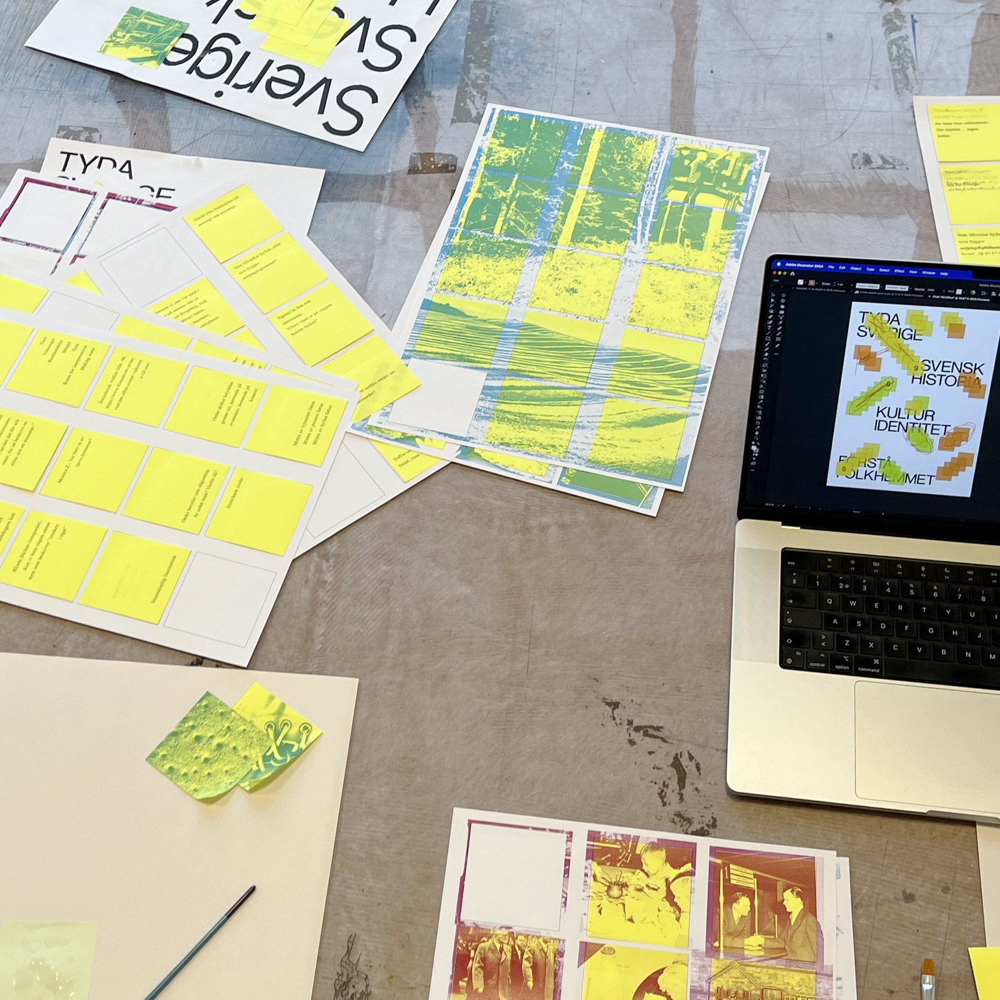
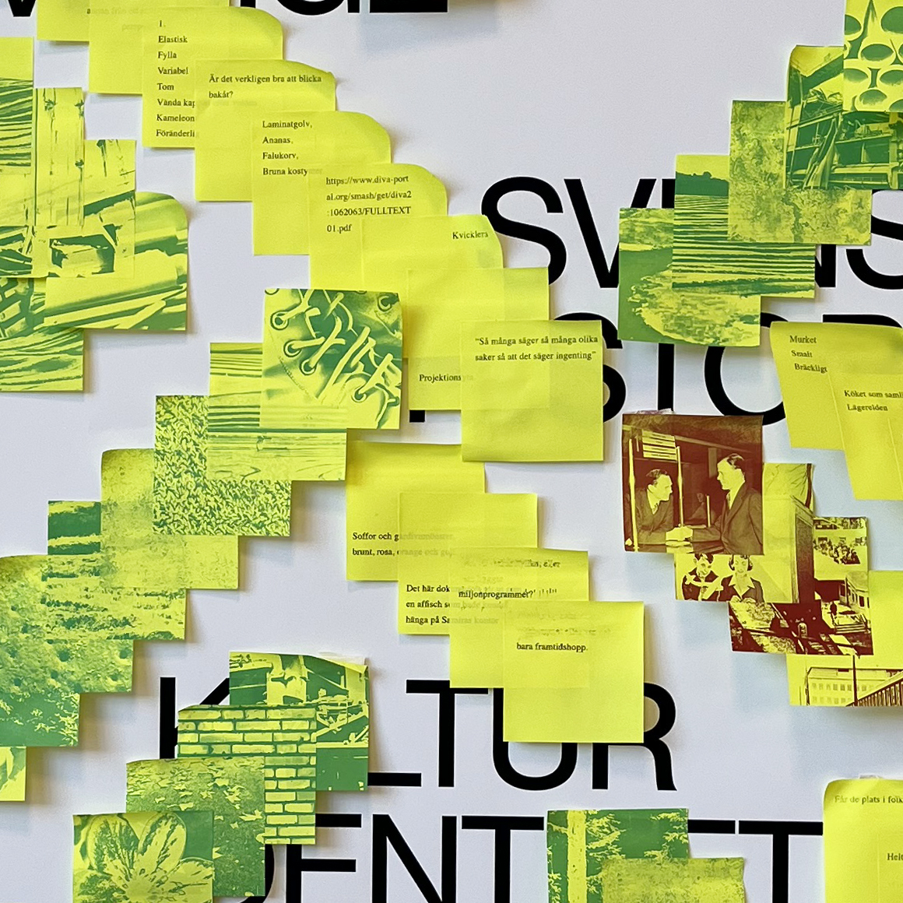
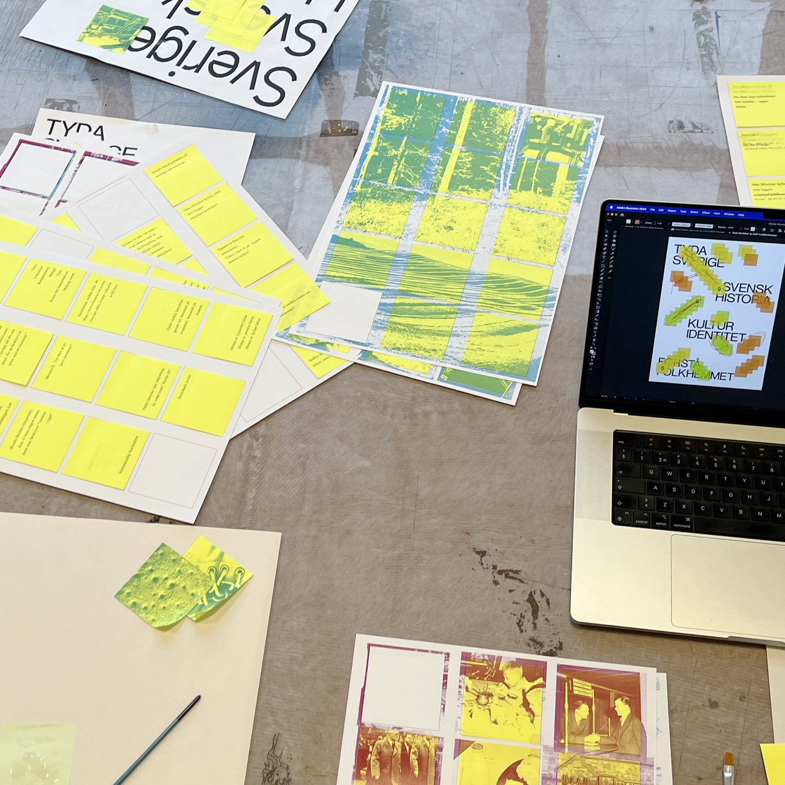
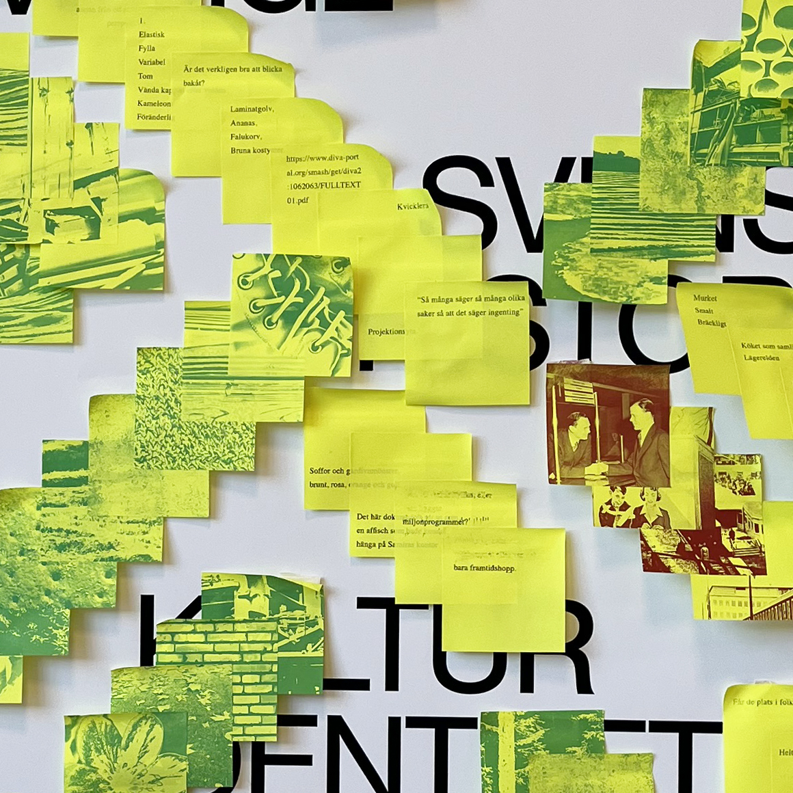
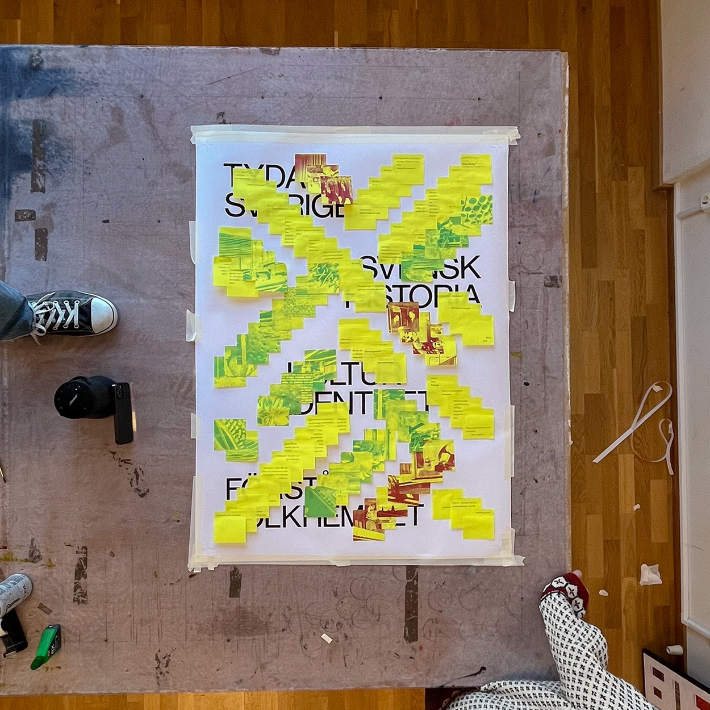

Tyda, Identity
Tyda is a graphic identity based on Post-it-notes with LaserJet printed text and images, and a poster exhibited at Vandalorum in Värnamo, Småland.
In collaboration with
Maja Ringsäter
Måns Horning
In collaboration with
Maja Ringsäter
Måns Horning

Tyda is the result of a collaborative project initiated by Sophia Wo
o
d and Oscar Guermouche at Beckmans College of Design and Vandalorum Museum för konst och design in Stockholm and Värnamo, respectively. The overarching theme was Folkhemmet, or Swedish identity and the question; On every aspect of swedish history, there's an infinite room for interpretation and personal connotations.
What is it like to understand Swedish identity, culture and history on these grounds?

 





The team's shared Google document (containing ideas, references, arguments) became the content we printed on post-it notes, along with archival and personal photography.
In working on the exhibition about Folkhemmet, it was clear that Swedish history is subject to dispute and interpretation. Around historical events, there are different theories. On what even is Swedish, answers differ between conversations. Conversations are then about conversations, and one thought leads to another.
These connotations surrounding our nationality's history have become as big a part as the history itself. To have a discussion about Swedishness, we must first sort through all the thoughts around it.
